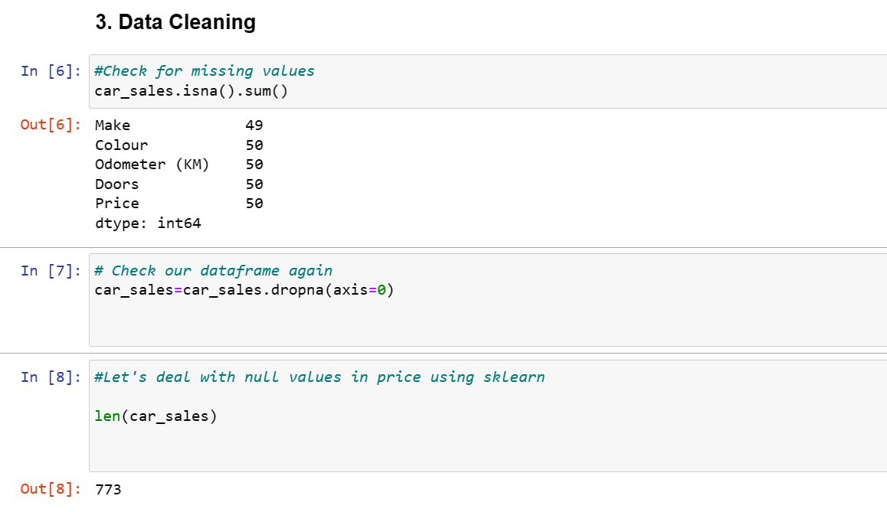
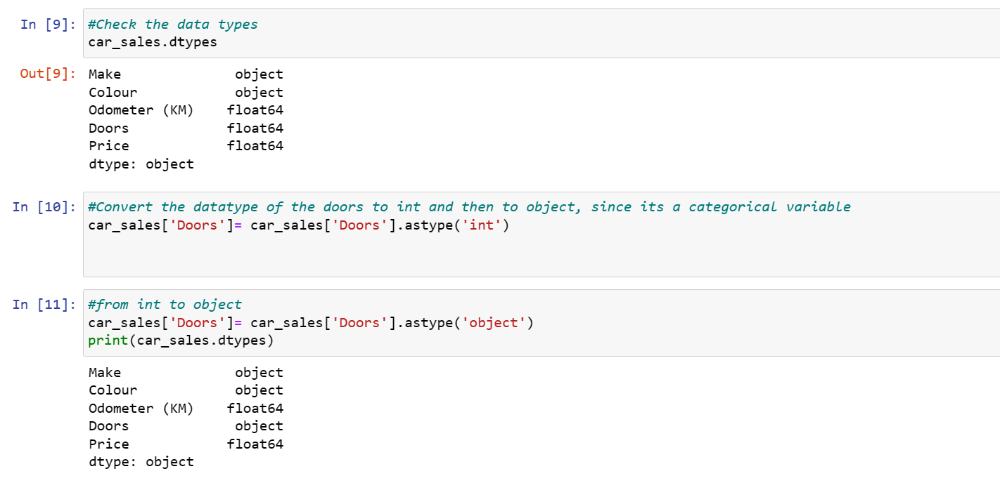
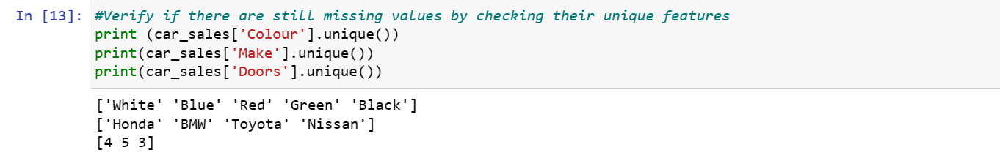
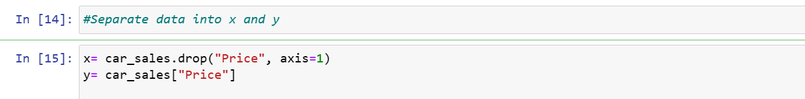
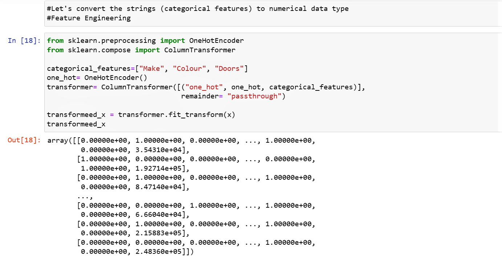
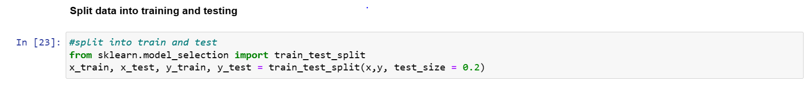
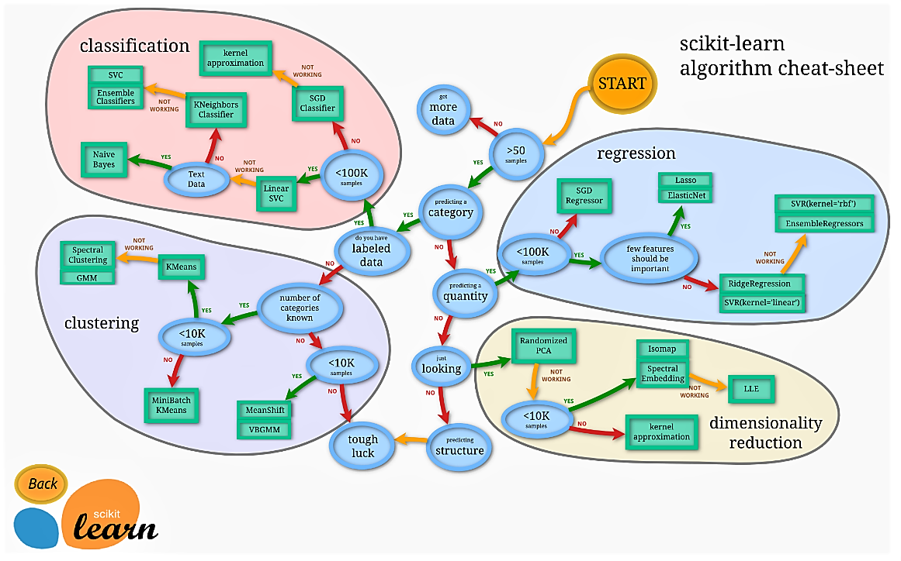

Predicting the Selling Price of Cars
using Linear regression, RandomForest Regressor.
Data Source: Kaggle
Libraries and Packages: Scikit-learn, Python-Numpy, Pandas
Project Outline
1. Understanding the objective
2. Data Setup
3. Data Cleaning & Exploratory Data Analysis (EDA)
4. Feature Engineering
5. Choosing an estimator
6. Model Evaluation
7. Saving and Loading
8. Summary of Results
1. Objective
The objective of this project is to provide a technology to determine the prices of new cars that is being produced. Employing the use of predictions models will help to set the most accurate prices for cars based on market value. thereby leading to better growth and outcomes for manufacturers.2.Data Setup
- Pip installing the dependencies.
- Importing the dataset and required libraries
3. Data Cleaning & Exploratory Data Analysis (EDA)
Data Cleaning and EDA was carried out on the datasets to examine the features. This was carried out checking and dropping all null values, checking and converting the datatypes as well as checking the unique features in each column.The cleaned dataset was separated into x(features) and y(target) variable    4. Feature Engineering
Categorical features containing string datatype was transformed into numerical using the OneHotEncoder Column transformer.This will make data readable to the machine. The result from the Column transformer is inturn subjected into training and testing.  5. Choosing an Estimator

Check link.
The Random Forest Regressor and Linear Regression was chosen as an estimator as prescribed by the scikit learn sheet in the documentation above. The x data was split into training and testing,the data used in training is about 20% indicated by test_size=0.2.The model was fit into train-data. The general score for the model was 35% and 30% respectively. This is the percentage of correctness of the models. The low value shows that the model needs to be improved.


6. Model Evaluation
The score functions tells us how closely our model is close to a perfect for a perfect prediction. R-squared, Mean Absolute Error (MAE), Mean squared Error of the models were evaluated.
 Let's evaluate the two models using different performance metrics.
R^2
Let's evaluate the two models using different performance metrics.
R^2


 MAE
MAE MAE is the average of the absolute differences between predictions and actual values. It gives an idea of how wrong the model predictions are.


7. Saving and Loading
The pickle module was used to save the datasets to be deployed.8. Summary of results
The result of the model shows that this model need to be improved. This is due to the large error and difference between the actual and predicted as well as the low percentage of accuracy.The complete code showing the model improvement can be found on my github page.